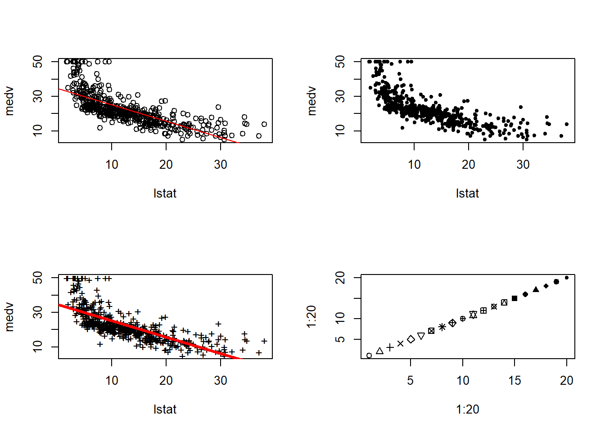
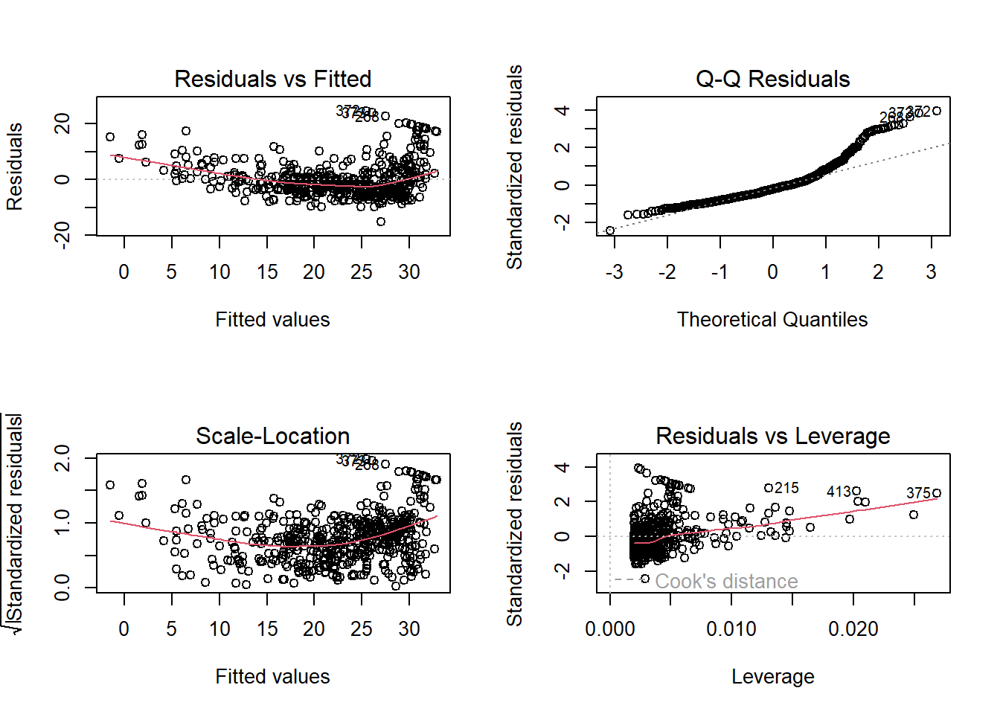
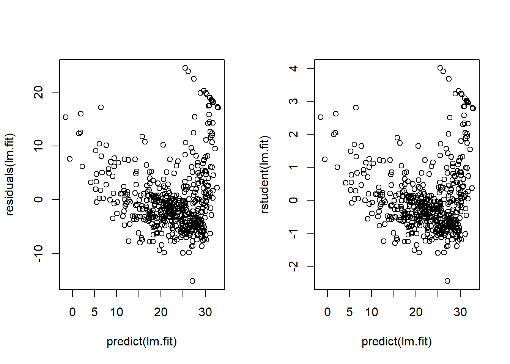
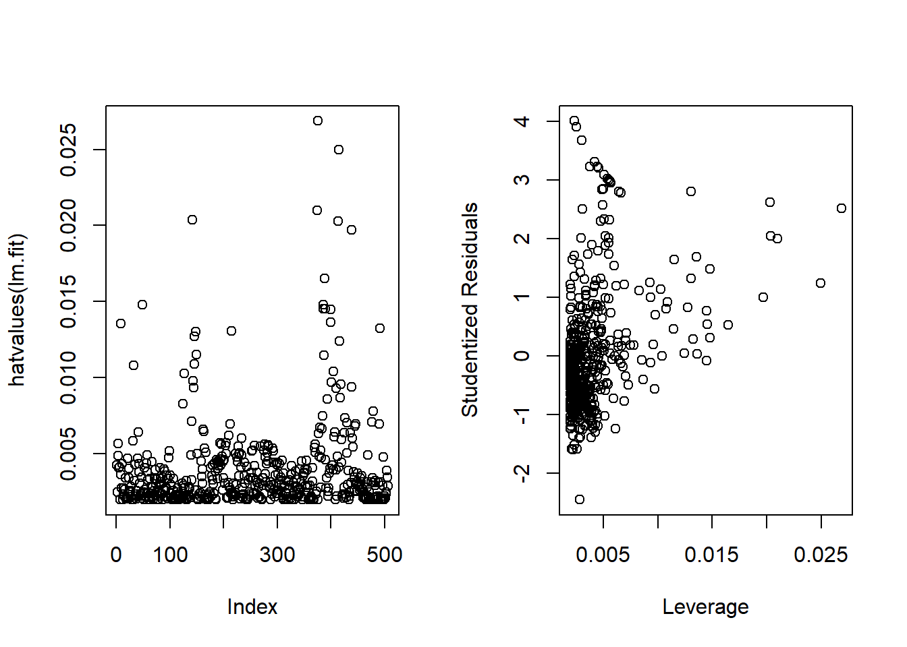
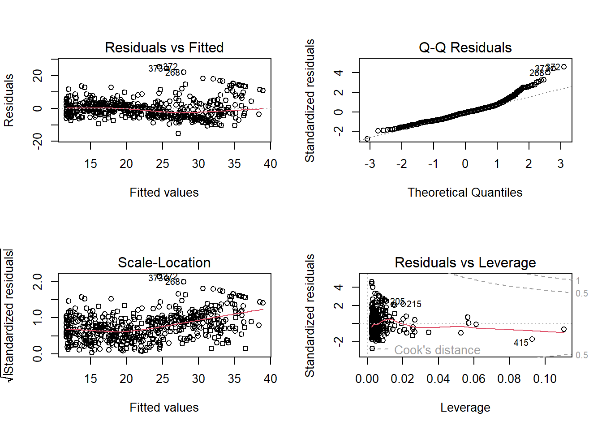

library(MASS)
library(ISLR)
library(car)Chapter 3 (R Lab)
Linear Regression (Lab)
3.6.1 Libraries
3.6.2 Simple Linear Regression
data(Boston)
names(Boston) [1] "crim" "zn" "indus" "chas" "nox" "rm" "age"
[8] "dis" "rad" "tax" "ptratio" "black" "lstat" "medv" lm.fit <- lm(medv ~ lstat, data = Boston)
attach(Boston)Displaying the results of simple linear regression of medv on lstat.
lm.fit
Call:
lm(formula = medv ~ lstat, data = Boston)
Coefficients:
(Intercept) lstat
34.55 -0.95 summary(lm.fit)
Call:
lm(formula = medv ~ lstat, data = Boston)
Residuals:
Min 1Q Median 3Q Max
-15.168 -3.990 -1.318 2.034 24.500
Coefficients:
Estimate Std. Error t value Pr(>|t|)
(Intercept) 34.55384 0.56263 61.41 <2e-16 ***
lstat -0.95005 0.03873 -24.53 <2e-16 ***
---
Signif. codes: 0 '***' 0.001 '**' 0.01 '*' 0.05 '.' 0.1 ' ' 1
Residual standard error: 6.216 on 504 degrees of freedom
Multiple R-squared: 0.5441, Adjusted R-squared: 0.5432
F-statistic: 601.6 on 1 and 504 DF, p-value: < 2.2e-16The contents of lm.fit can be displayed as :—
names(lm.fit) [1] "coefficients" "residuals" "effects" "rank"
[5] "fitted.values" "assign" "qr" "df.residual"
[9] "xlevels" "call" "terms" "model" coef(lm.fit)(Intercept) lstat
34.5538409 -0.9500494 confint(lm.fit) 2.5 % 97.5 %
(Intercept) 33.448457 35.6592247
lstat -1.026148 -0.8739505Using the predict function for predicting the values of medv for a given value(s) of lstat :—
predict(lm.fit, data.frame(lstat=c(5,10,15)), interval = "confidence") fit lwr upr
1 29.80359 29.00741 30.59978
2 25.05335 24.47413 25.63256
3 20.30310 19.73159 20.87461predict(lm.fit, data.frame(lstat=c(5,10,15)), interval = "prediction") fit lwr upr
1 29.80359 17.565675 42.04151
2 25.05335 12.827626 37.27907
3 20.30310 8.077742 32.52846The plot of medv with lstat along with least squares regression line is as follows:-
par(mfrow=c(2,2))
plot(x=lstat, y=medv)
abline(lm.fit, col="red")
plot(x=lstat, y=medv, pch=20)
plot(x=lstat, y=medv, pch="+")
abline(lm.fit, col="red", lwd=3)
plot(1:20, 1:20, pch=1:20)
Plotting the 4 diagnostic plots of lm.fit:—
par(mfrow=c(2,2))
plot(lm.fit)
Alternatively, we can plot the residuals vs. fitted values; and studentized residuals vs. fitted values as follows: —
par(mfrow=c(1,2))
plot(x=predict(lm.fit), y=residuals(lm.fit))
plot(x=predict(lm.fit), y=rstudent(lm.fit))
Now, we calculate the leverage statistics using hatvalues function. The largest leverage is for the observation number 375 (which.max(hatvalues(lm.fit))). Also, I plot the studentized residuals vs. leverage statistic, just like Fig.3.13(right) in the book :–
par(mfrow=c(1,2))
plot(hatvalues(lm.fit))
plot(x=hatvalues(lm.fit), y=rstudent(lm.fit),
xlab = "Leverage", ylab="Studentized Residuals")
which.max(hatvalues(lm.fit))375
375 3.6.3 Multiple Linear Regression
Fitting a multiple linear regression as follows:-
lm.fit <- lm(medv ~ lstat + age, data = Boston)
summary(lm.fit)
Call:
lm(formula = medv ~ lstat + age, data = Boston)
Residuals:
Min 1Q Median 3Q Max
-15.981 -3.978 -1.283 1.968 23.158
Coefficients:
Estimate Std. Error t value Pr(>|t|)
(Intercept) 33.22276 0.73085 45.458 < 2e-16 ***
lstat -1.03207 0.04819 -21.416 < 2e-16 ***
age 0.03454 0.01223 2.826 0.00491 **
---
Signif. codes: 0 '***' 0.001 '**' 0.01 '*' 0.05 '.' 0.1 ' ' 1
Residual standard error: 6.173 on 503 degrees of freedom
Multiple R-squared: 0.5513, Adjusted R-squared: 0.5495
F-statistic: 309 on 2 and 503 DF, p-value: < 2.2e-16Performing regression of medv on all other variables :—
lm.fit <- lm(medv ~ ., data=Boston)
summary(lm.fit)
Call:
lm(formula = medv ~ ., data = Boston)
Residuals:
Min 1Q Median 3Q Max
-15.595 -2.730 -0.518 1.777 26.199
Coefficients:
Estimate Std. Error t value Pr(>|t|)
(Intercept) 3.646e+01 5.103e+00 7.144 3.28e-12 ***
crim -1.080e-01 3.286e-02 -3.287 0.001087 **
zn 4.642e-02 1.373e-02 3.382 0.000778 ***
indus 2.056e-02 6.150e-02 0.334 0.738288
chas 2.687e+00 8.616e-01 3.118 0.001925 **
nox -1.777e+01 3.820e+00 -4.651 4.25e-06 ***
rm 3.810e+00 4.179e-01 9.116 < 2e-16 ***
age 6.922e-04 1.321e-02 0.052 0.958229
dis -1.476e+00 1.995e-01 -7.398 6.01e-13 ***
rad 3.060e-01 6.635e-02 4.613 5.07e-06 ***
tax -1.233e-02 3.760e-03 -3.280 0.001112 **
ptratio -9.527e-01 1.308e-01 -7.283 1.31e-12 ***
black 9.312e-03 2.686e-03 3.467 0.000573 ***
lstat -5.248e-01 5.072e-02 -10.347 < 2e-16 ***
---
Signif. codes: 0 '***' 0.001 '**' 0.01 '*' 0.05 '.' 0.1 ' ' 1
Residual standard error: 4.745 on 492 degrees of freedom
Multiple R-squared: 0.7406, Adjusted R-squared: 0.7338
F-statistic: 108.1 on 13 and 492 DF, p-value: < 2.2e-16The components of summary(lm.fit) are :–
names(summary(lm.fit)) [1] "call" "terms" "residuals" "coefficients"
[5] "aliased" "sigma" "df" "r.squared"
[9] "adj.r.squared" "fstatistic" "cov.unscaled" summary(lm.fit)$r.squared ; summary(lm.fit)$sigma[1] 0.7406427[1] 4.745298Calculating V.I.F from car::vif() from the car package :—
car::vif(lm.fit) crim zn indus chas nox rm age dis
1.792192 2.298758 3.991596 1.073995 4.393720 1.933744 3.100826 3.955945
rad tax ptratio black lstat
7.484496 9.008554 1.799084 1.348521 2.941491 Excluding one variable (age, which has high p-value) from multiple regression :—
lm.fit1 <- lm(medv ~ . - age, data=Boston)
summary(lm.fit1)
Call:
lm(formula = medv ~ . - age, data = Boston)
Residuals:
Min 1Q Median 3Q Max
-15.6054 -2.7313 -0.5188 1.7601 26.2243
Coefficients:
Estimate Std. Error t value Pr(>|t|)
(Intercept) 36.436927 5.080119 7.172 2.72e-12 ***
crim -0.108006 0.032832 -3.290 0.001075 **
zn 0.046334 0.013613 3.404 0.000719 ***
indus 0.020562 0.061433 0.335 0.737989
chas 2.689026 0.859598 3.128 0.001863 **
nox -17.713540 3.679308 -4.814 1.97e-06 ***
rm 3.814394 0.408480 9.338 < 2e-16 ***
dis -1.478612 0.190611 -7.757 5.03e-14 ***
rad 0.305786 0.066089 4.627 4.75e-06 ***
tax -0.012329 0.003755 -3.283 0.001099 **
ptratio -0.952211 0.130294 -7.308 1.10e-12 ***
black 0.009321 0.002678 3.481 0.000544 ***
lstat -0.523852 0.047625 -10.999 < 2e-16 ***
---
Signif. codes: 0 '***' 0.001 '**' 0.01 '*' 0.05 '.' 0.1 ' ' 1
Residual standard error: 4.74 on 493 degrees of freedom
Multiple R-squared: 0.7406, Adjusted R-squared: 0.7343
F-statistic: 117.3 on 12 and 493 DF, p-value: < 2.2e-163.6.4 Interaction Terms
Including interaction terms as follows :-
summary(lm(medv ~ lstat*age, data=Boston))
Call:
lm(formula = medv ~ lstat * age, data = Boston)
Residuals:
Min 1Q Median 3Q Max
-15.806 -4.045 -1.333 2.085 27.552
Coefficients:
Estimate Std. Error t value Pr(>|t|)
(Intercept) 36.0885359 1.4698355 24.553 < 2e-16 ***
lstat -1.3921168 0.1674555 -8.313 8.78e-16 ***
age -0.0007209 0.0198792 -0.036 0.9711
lstat:age 0.0041560 0.0018518 2.244 0.0252 *
---
Signif. codes: 0 '***' 0.001 '**' 0.01 '*' 0.05 '.' 0.1 ' ' 1
Residual standard error: 6.149 on 502 degrees of freedom
Multiple R-squared: 0.5557, Adjusted R-squared: 0.5531
F-statistic: 209.3 on 3 and 502 DF, p-value: < 2.2e-163.6.5 Non-Linear Transformations of Predictors
lm.fit2 <- lm(medv ~ lstat + I(lstat^2), data=Boston)
summary(lm.fit2)
Call:
lm(formula = medv ~ lstat + I(lstat^2), data = Boston)
Residuals:
Min 1Q Median 3Q Max
-15.2834 -3.8313 -0.5295 2.3095 25.4148
Coefficients:
Estimate Std. Error t value Pr(>|t|)
(Intercept) 42.862007 0.872084 49.15 <2e-16 ***
lstat -2.332821 0.123803 -18.84 <2e-16 ***
I(lstat^2) 0.043547 0.003745 11.63 <2e-16 ***
---
Signif. codes: 0 '***' 0.001 '**' 0.01 '*' 0.05 '.' 0.1 ' ' 1
Residual standard error: 5.524 on 503 degrees of freedom
Multiple R-squared: 0.6407, Adjusted R-squared: 0.6393
F-statistic: 448.5 on 2 and 503 DF, p-value: < 2.2e-16We use anova() function to quantify how much the quadratic fit is better than linear fit. This is shown as below:
lm.fit <- lm(medv~lstat, data=Boston)
lm.fit2 <- lm(medv ~ lstat + I(lstat^2), data=Boston)
anova(lm.fit, lm.fit2)Analysis of Variance Table
Model 1: medv ~ lstat
Model 2: medv ~ lstat + I(lstat^2)
Res.Df RSS Df Sum of Sq F Pr(>F)
1 504 19472
2 503 15347 1 4125.1 135.2 < 2.2e-16 ***
---
Signif. codes: 0 '***' 0.001 '**' 0.01 '*' 0.05 '.' 0.1 ' ' 1Hence, the model containing \(lstat^2\) is far superior to the simple linear regression model. This is also shown in the the diagnostic plots as below:
par(mfrow=c(2,2))
plot(lm.fit2)
Now, we use the poly() function with the lm() call to include polynomials of a variable up to any degree.
lm.fit5 <- lm(medv ~ poly(lstat,5), data=Boston)
summary(lm.fit5)
Call:
lm(formula = medv ~ poly(lstat, 5), data = Boston)
Residuals:
Min 1Q Median 3Q Max
-13.5433 -3.1039 -0.7052 2.0844 27.1153
Coefficients:
Estimate Std. Error t value Pr(>|t|)
(Intercept) 22.5328 0.2318 97.197 < 2e-16 ***
poly(lstat, 5)1 -152.4595 5.2148 -29.236 < 2e-16 ***
poly(lstat, 5)2 64.2272 5.2148 12.316 < 2e-16 ***
poly(lstat, 5)3 -27.0511 5.2148 -5.187 3.10e-07 ***
poly(lstat, 5)4 25.4517 5.2148 4.881 1.42e-06 ***
poly(lstat, 5)5 -19.2524 5.2148 -3.692 0.000247 ***
---
Signif. codes: 0 '***' 0.001 '**' 0.01 '*' 0.05 '.' 0.1 ' ' 1
Residual standard error: 5.215 on 500 degrees of freedom
Multiple R-squared: 0.6817, Adjusted R-squared: 0.6785
F-statistic: 214.2 on 5 and 500 DF, p-value: < 2.2e-16Lastly, a log transformation of the predictor variable.
summary(lm(medv ~ log(lstat), data=Boston))
Call:
lm(formula = medv ~ log(lstat), data = Boston)
Residuals:
Min 1Q Median 3Q Max
-14.4599 -3.5006 -0.6686 2.1688 26.0129
Coefficients:
Estimate Std. Error t value Pr(>|t|)
(Intercept) 52.1248 0.9652 54.00 <2e-16 ***
log(lstat) -12.4810 0.3946 -31.63 <2e-16 ***
---
Signif. codes: 0 '***' 0.001 '**' 0.01 '*' 0.05 '.' 0.1 ' ' 1
Residual standard error: 5.329 on 504 degrees of freedom
Multiple R-squared: 0.6649, Adjusted R-squared: 0.6643
F-statistic: 1000 on 1 and 504 DF, p-value: < 2.2e-163.6.6 Qualitative Predictor
Loading the Carseats data set.
data("Carseats")
head(Carseats) Sales CompPrice Income Advertising Population Price ShelveLoc Age Education
1 9.50 138 73 11 276 120 Bad 42 17
2 11.22 111 48 16 260 83 Good 65 10
3 10.06 113 35 10 269 80 Medium 59 12
4 7.40 117 100 4 466 97 Medium 55 14
5 4.15 141 64 3 340 128 Bad 38 13
6 10.81 124 113 13 501 72 Bad 78 16
Urban US
1 Yes Yes
2 Yes Yes
3 Yes Yes
4 Yes Yes
5 Yes No
6 No Yesattach(Carseats)Now, we create a multiple linear regression with some interaction terms:-
lm.fit <- lm(Sales ~ . + Income*Advertising + Price*Age, data=Carseats)
summary(lm.fit)
Call:
lm(formula = Sales ~ . + Income * Advertising + Price * Age,
data = Carseats)
Residuals:
Min 1Q Median 3Q Max
-2.9208 -0.7503 0.0177 0.6754 3.3413
Coefficients:
Estimate Std. Error t value Pr(>|t|)
(Intercept) 6.5755654 1.0087470 6.519 2.22e-10 ***
CompPrice 0.0929371 0.0041183 22.567 < 2e-16 ***
Income 0.0108940 0.0026044 4.183 3.57e-05 ***
Advertising 0.0702462 0.0226091 3.107 0.002030 **
Population 0.0001592 0.0003679 0.433 0.665330
Price -0.1008064 0.0074399 -13.549 < 2e-16 ***
ShelveLocGood 4.8486762 0.1528378 31.724 < 2e-16 ***
ShelveLocMedium 1.9532620 0.1257682 15.531 < 2e-16 ***
Age -0.0579466 0.0159506 -3.633 0.000318 ***
Education -0.0208525 0.0196131 -1.063 0.288361
UrbanYes 0.1401597 0.1124019 1.247 0.213171
USYes -0.1575571 0.1489234 -1.058 0.290729
Income:Advertising 0.0007510 0.0002784 2.698 0.007290 **
Price:Age 0.0001068 0.0001333 0.801 0.423812
---
Signif. codes: 0 '***' 0.001 '**' 0.01 '*' 0.05 '.' 0.1 ' ' 1
Residual standard error: 1.011 on 386 degrees of freedom
Multiple R-squared: 0.8761, Adjusted R-squared: 0.8719
F-statistic: 210 on 13 and 386 DF, p-value: < 2.2e-16We use the contrasts() function to display the dummy coding that R uses for qualitative variables such as ShelveLoc. We can use contrasts() to change the dummy values for different factor levels.
contrasts(ShelveLoc) Good Medium
Bad 0 0
Good 1 0
Medium 0 13.6.7 Writing Functions
We now write the function to load both libraries ISLR and MASS.
LoadLibraries <- function(){
library(MASS)
library(ISLR)
print("Libraries MASS and ISLR have been loaded!")
}
LoadLibraries()[1] "Libraries MASS and ISLR have been loaded!"